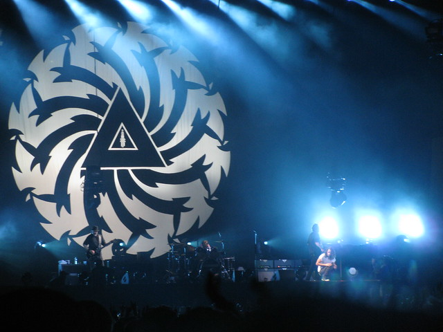
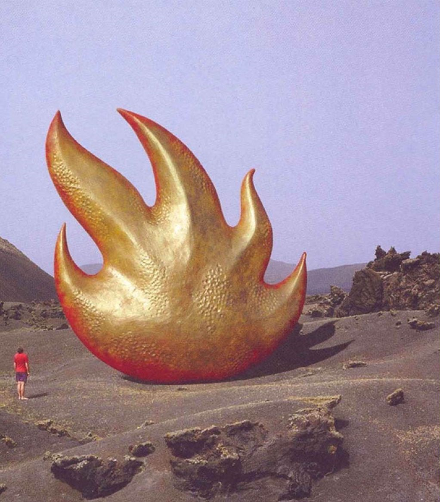
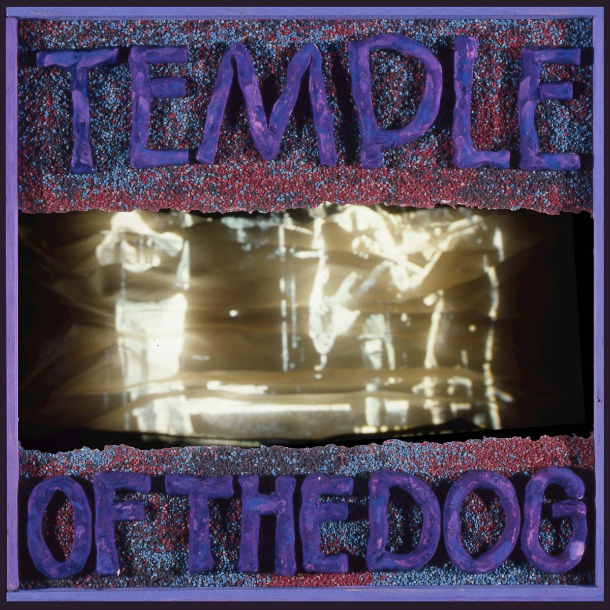

Soundgarden was an American rock band formed in Seattle, Washington, in 1984 by singer and rhythm guitarist Chris Cornell, lead guitarist Kim Thayil, and bassist Hiro Yamamoto. Matt Cameron became the band's full-time drummer in 1986, while bassist Ben Shepherd became a permanent replacement for Yamamoto in 1990. The band dissolved in 1997 and re-formed in 2010. Following Cornell's death in 2017, Thayil became the last remaining original member.
Soundgarden was one of the seminal creators of grunge, a style of alternative rock that developed in Seattle, and was the first of a number of grunge bands to sign to the record label Sub Pop. Soundgarden was the first grunge band to sign to a major label (A&M Records in 1989), though they did not achieve commercial success until they popularized the genre in the early 1990s with Seattle contemporaries Alice in Chains, Pearl Jam, and Nirvana.
Soundgarden achieved its biggest success with the 1994 album Superunknown, which debuted at number one on the Billboard 200 and yielded the Grammy Award-winning singles "Black Hole Sun" and "Spoonman". In 1997, the band broke up due to internal strife over its creative direction. After more than a decade of working on projects and other bands, Soundgarden reunited in 2010, and Republic Records released their sixth studio album, King Animal two years later.
Following Cornell's suicide in 2017 and a year of uncertainty of the band's future, Thayil declared in an October 2018 interview with Seattle Times that they would not continue as Soundgarden; they did, however, reunite in January 2019 for a one-off concert in tribute to Cornell.
As of 2012, Soundgarden sold more than 10.5 million records in the United States, and an estimated 25 million worldwide. VH1 ranked Soundgarden at number 14 in their special 100 Greatest Artists of Hard Rock.

Audioslave was an American rock supergroup formed in Los Angeles in 2001. The four-piece band consisted of Soundgarden lead singer/rhythm guitarist Chris Cornell and Rage Against the Machine members Tom Morello (lead guitar), Tim Commerford (bass/backing vocals), and Brad Wilk (drums). Critics first described Audioslave as a combination of Soundgarden and Rage Against the Machine, but by the band's second album, Out of Exile, it was noted that they had established a separate identity. Audioslave's sound was created by blending 1970s hard rock with 1990s alternative rock. Moreover, Morello incorporated his well-known, unconventional guitar solos into the mix. As with Rage Against the Machine, the band prided themselves on the fact that all sounds on their albums were produced using only guitar, bass, drums, and vocals.
In its six years of existence, Audioslave released three albums, received three Grammy nominations, sold more than eight million records worldwide and became the first American rock band to perform an open-air concert in Cuba. Audioslave disbanded in February 2007 when Cornell issued a statement announcing that he was permanently leaving the band "due to irresolvable personality conflicts as well as musical differences." The 2007 Rage Against the Machine reunion and tour involving the rest of the band, as well as solo albums released that same year by Morello and Cornell, cemented the supergroup's permanent demise. On January 20, 2017, three days after announcing their reunion, Audioslave performed together for the first time in over a decade at Prophets of Rage's Anti-Inaugural Ball. In the early hours of May 18, 2017, Chris Cornell was found dead in his hotel room in Detroit, at the age of 52, after playing a Soundgarden show.

Temple of the Dog was an American rock supergroup that formed in Seattle, Washington in 1990. It was conceived by vocalist Chris Cornell of Soundgarden as a tribute to his friend, the late Andrew Wood, lead singer of the bands Malfunkshun and Mother Love Bone. The lineup included Stone Gossard on rhythm guitar, Jeff Ament on bass guitar (both ex-members of Mother Love Bone), Mike McCready (Pearl Jam) on lead guitar, and Matt Cameron (Soundgarden and later Pearl Jam) on drums. Eddie Vedder appeared as a guest to provide some lead and backing vocals.
The band released its only album, the self-titled Temple of the Dog, in April 1991 through A&M Records. The recording sessions took place in November and December 1990 at London Bridge Studios, in Seattle, Washington with producer Rakesh "Rick" Parashar. Although earning praise from music critics at the time of its release, the album was not widely recognized until 1992, when Vedder, Ament, Gossard, and McCready had their breakthrough with Pearl Jam. Cameron would later join Pearl Jam, serving as drummer since 1998.